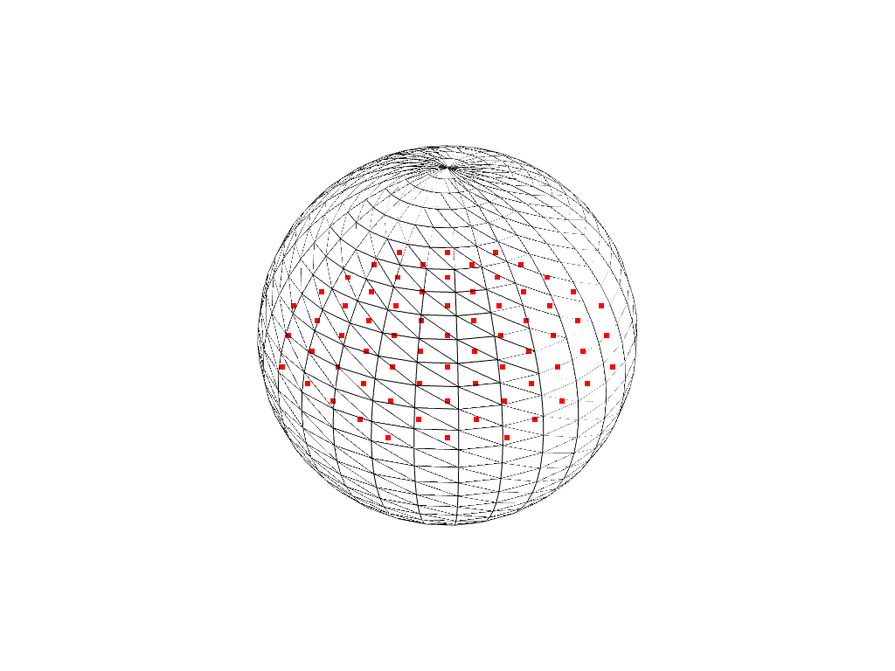

select_enclosed_points¶
- UniformGridFilters.select_enclosed_points(surface, tolerance=0.001, inside_out=False, check_surface=True, progress_bar=False)¶
ポイントが閉じた表面の内側にあるかどうかをマークします．
これにより，すべての入力ポイントが評価され，囲まれたサーフェス内にあるかどうかが判断されます．フィルタは，ポイントが指定されたサーフェスの外側(マスク値=0)か内側(マスク値=1)かを示す (0, 1) マスク(vtkDataArrayの形式で)を生成します．(出力vtkDataArrayの名前は
"SelectedPoints"です．)このフィルタはデータ配列を生成して出力しますが，入力データセットは変更しません．セルまたは点を抽出する場合は，さまざまな閾値フィルタを使用できます(すなわち，出力配列の閾値)．
警告
フィルタは，サーフェスが閉じていて多様体であることを前提としています．ブーリアンフラグを設定して，フィルタに最初にこれがtrueであるかどうかを強制的にチェックさせることができます．
Falseで多様体でない場合は，エラーが発生します．- パラメータ
- surface
pyvista.PolyData 包含のテストに使用するサーフェスを設定します．これは
pyvista.PolyDataオブジェクトでなければなりません．- tolerance
float,optional 交差の許容差．許容値は，囲むサーフェスのバウンディングボックスの割合として表されます．
- inside_outbool,
optional 既定では，サーフェス内のポイントは内側にマークされるか，出力に送られます．
inside_outがTrueの場合，サーフェスの外側のポイントは内側とマークされます．- check_surfacebool,
optional サーフェスの閉合をチェックするかどうかを指定します．オンの場合，アルゴリズムは最初にサーフェスが閉じて多様体であるかどうかをチェックします．サーフェスが閉じていて多様体でない場合，ランタイムエラーが発生します．
- progress_barbool,
optional 進行状況を示す進行状況バーを表示します．
- surface
- 戻り値
pyvista.PolyDatapoint_data['SelectedPoints']という配列を含むメッシュ．
例
平面上のどの点が多様体球表面メッシュの内部にあるかを決定します．
DataSetFilters.extract_points()フィルタを使ってこれらの点を抽出し，それをプロットします．>>> import pyvista >>> sphere = pyvista.Sphere() >>> plane = pyvista.Plane() >>> selected = plane.select_enclosed_points(sphere) >>> pts = plane.extract_points(selected['SelectedPoints'].view(bool), ... adjacent_cells=False) >>> pl = pyvista.Plotter() >>> _ = pl.add_mesh(sphere, style='wireframe') >>> _ = pl.add_points(pts, color='r') >>> pl.show()
